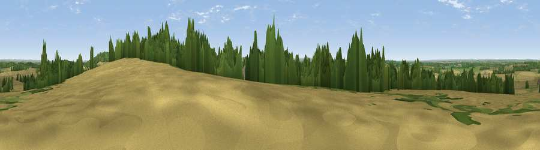

Viewpoint near Coleshill
#20738 in England · top 27% of its area beats it · near Coleshill · path 61 mWhere it is
The exact computed spot (SU 23875 94025). Click the marker for map links.
Public access: the nearest public right of way is about 61 m away — the final stretch may cross private land. Computed from Natural England's CRoW access layer and OpenStreetMap rights of way — not the legal definitive map. Always verify locally.
The view, rendered

A 360° render of this exact spot computed from the terrain model, tree cover and land cover — summer colours, afternoon light, calibrated against photographs of famous viewpoints. Real trees, hedges and buildings will differ in detail.
The panorama
Grey silhouette: terrain skyline in each direction (720 bearings, Earth curvature and refraction included). Dashed green: skyline with trees (+15 m) and buildings (+8 m) as obstacles. Blue strip: how far the ground is visible on each bearing.
Where the view opens
Wedge length = distance to the farthest visible ground on that bearing (vegetation-aware). Rings at 10, 25 and 50 km.
What fills the view
53% cropland · 31% grassland · 15% woodland · 1% built-up
Angular shares of the visible panorama (visual magnitude), not map area. Landscape diversity 0.45 (0–1 Shannon).
Key numbers
More beautiful places nearby
The staircase of upgrades: each row has a higher view potential than everything closer. Driving times are estimates from straight-line distance, calibrated against real road routing — check an actual route before setting out.
| Place | Direction | Drive | Score |
|---|---|---|---|
| Viewpoint near Great Coxwell | ENE · 4 km | ~9 min | 56.3 |
| Folly Hill | ENE · 6 km | ~13 min | 69.5 |
| Viewpoint near Woolstone | SE · 10 km | ~19 min | 76.7 |
| Martinsell viewpoint | SSW · 31 km | ~48 min | 76.9 |
| Viewpoint near Leckhampton | NW · 38 km | ~57 min | 77.8 |
| Viewpoint near Great Witcombe | WNW · 40 km | ~60 min | 80.5 |
| Nottingham Hill | NW · 43 km | ~63 min | 80.9 |
| Bredon Hill | NNW · 54 km | ~76 min | 83.0 |
51.64452, -1.65636 · source: screening · position refined by local search. Computed location — check access rights before visiting.